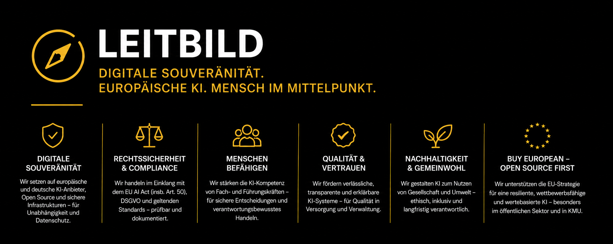

Leitbild

Verantwortungsvolle KI-Qualifizierung für Gesundheitswesen, Pflege, Sozialwirtschaft und kommunale Daseinsvorsorge auf der Grundlage europäischer und deutscher KI-Technologien – im Einklang mit der Apply AI Strategy der Europäischen Kommission und dem EU AI Act.
Souveränität als Grundprinzip der Qualifizierung
Die digitale Transformation der Sozialwirtschaft wird zunehmend durch den Einsatz von Künstlicher Intelligenz geprägt. Diese Qualifizierungsinitiative verfolgt das Ziel, bei der Entwicklung, Erprobung und Umsetzung von KI-Qualifizierungsmaßnahmen bevorzugt auf europäische und insbesondere deutsche KI-Anbieter, Plattformen und digitale Infrastrukturen zurückzugreifen.
Damit werden Datensouveränität, Transparenz, europäische Werte sowie die Anforderungen des EU AI Act von Beginn an berücksichtigt. Gleichzeitig soll die Innovationskraft des europäischen KI-Ökosystems gestärkt und die Abhängigkeit von außereuropäischen Technologieanbietern reduziert werden.
Drei Leitziele
- Datensouveränität & Transparenz sichern
- Europäisches KI-Ökosystem stärken
- Abhängigkeiten von außereuropäischen Anbietern reduzieren
Anschluss an die Apply AI Strategy der EU-Kommission
Die Qualifizierungsstrategie verfolgt das Ziel, Beschäftigte im Gesundheitswesen, in der Pflege, der Sozialwirtschaft sowie in der kommunalen Daseinsvorsorge dazu zu befähigen, Künstliche Intelligenz kompetent, kritisch und verantwortungsvoll einzusetzen. Im Mittelpunkt steht nicht die Nutzung einzelner Technologien, sondern der Aufbau nachhaltiger Handlungskompetenz. Mitarbeitende sollen lernen, KI-Systeme fachlich zu bewerten, Risiken und Chancen einzuordnen, rechtliche Anforderungen zu berücksichtigen und geeignete Lösungen für ihren jeweiligen Arbeitskontext auszuwählen.
Diese Ausrichtung steht im Einklang mit der KI-Strategie „Anwenden” (Apply AI Strategy) der Europäischen Kommission. Diese verfolgt eine „KI-First-Politik” und propagiert insbesondere für den öffentlichen Sektor sowie für kleine und mittlere Unternehmen einen „Buy European”-Ansatz mit Schwerpunkt auf Open-Source-KI-Lösungen.
Ein besonderer Schwerpunkt liegt dabei auf der Fähigkeit, europäische und insbesondere deutsche KI-Anbieter, Sprachmodelle und digitale Plattformen zu identifizieren, miteinander zu vergleichen und auf ihre Eignung für den praktischen Einsatz zu prüfen. Die Qualifizierung vermittelt hierfür nicht nur technisches Grundlagenwissen, sondern auch Kompetenzen in den Bereichen Datenschutz, Informationssicherheit, KI-Governance, Transparenz, Dokumentation, Beschaffung und organisatorische Verantwortung.
Langfristig soll dadurch eine nachhaltige und unabhängige KI-Kompetenzstruktur entstehen, die Organisationen in die Lage versetzt, technologische Entwicklungen selbstbestimmt zu bewerten und strategische Entscheidungen auf einer fundierten Grundlage zu treffen. Ziel ist es, Abhängigkeiten von einzelnen außereuropäischen Plattformanbietern zu reduzieren, digitale Souveränität zu stärken und gleichzeitig Innovationen verantwortungsvoll nutzbar zu machen.
Buy European – Open Source First
KI-First-Politik der EU-Kommission mit Fokus auf öffentlichen Sektor, KMU und Schlüsselsektoren – Gesundheitswesen und Pflege gehören ausdrücklich dazu.
Kompetenz statt Technikfokus
Im Mittelpunkt stehen die Menschen, die mit KI arbeiten – nicht die Technologie selbst. Beschäftigte werden befähigt, europäische Systeme verantwortungsvoll auszuwählen und einzusetzen.
Werte, die wir bei der KI-Qualifizierung mitdenken
Transparenz
Nachvollziehbare KI-Systeme, klare Kennzeichnung von KI-generierten Inhalten gemäß Art. 50 AI Act.
Datenschutz
Datensouveränität und DSGVO-Konformität als Grundvoraussetzung für den Einsatz im Gesundheits- und Sozialwesen.
Mitbestimmung
Beteiligung von Beschäftigten und Interessenvertretungen an der Auswahl und Gestaltung von KI-Anwendungen.
Europäische Werte
Ausrichtung an europäischen Grundrechten, dem EU AI Act und der Buy-European-Logik der Apply AI Strategy.
Selbstverpflichtungen
Freiwillige Selbstverpflichtungen und Referenzdokumente zur Umsetzung der Transparenzpflichten des EU AI Act bilden eine zentrale Grundlage für die Vermittlung verantwortungsvoller KI-Nutzung in den Qualifizierungsmodulen.
Am 12. Juni 2026 hat Thomas Bade die freiwillige Selbstverpflichtung zum Code of Practice on Marking and Labelling of AI-generated Content des Europäischen KI-Büros unterzeichnet. Der Verhaltenskodex wurde von der Europäischen Kommission veröffentlicht, um Organisationen bei der praktischen Umsetzung der Transparenzanforderungen des Artikels 50 EU AI Act zu unterstützen.
Mit der Unterzeichnung verpflichtet sich Thomas Bade insbesondere dazu,
- KI-generierte Inhalte transparent und nachvollziehbar zu kennzeichnen,
- die Anforderungen des EU AI Act frühzeitig in Qualifizierungs- und Governance-Konzepte zu integrieren,
- die Herkunft und Entstehung digitaler Inhalte nachvollziehbar zu dokumentieren,
- Beschäftigte, Führungskräfte und Organisationen für die Transparenzpflichten des Artikels 50 EU AI Act zu sensibilisieren,
- vertrauenswürdige, erklärbare und verantwortungsvoll eingesetzte KI-Systeme zu fördern,
- europäische Standards für digitale Souveränität, Datenschutz und Informationsintegrität aktiv zu unterstützen.
„KI-Kompetenz, Transparenz und digitale Souveränität gehören zusammen. Wo KI-Inhalte erstellt oder bearbeitet werden, sollen Herkunft, Verantwortlichkeiten und der Einsatz von KI für Nutzerinnen und Nutzer nachvollziehbar bleiben.“Selbstverpflichtung Thomas Bade · 12. Juni 2026
Code of Conduct „Demokratische KI“
Thomas Bade hat den Code of Conduct Demokratische KI unterzeichnet und unterstützt damit die Initiative für einen verantwortungsvollen, menschenzentrierten und gemeinwohlorientierten Einsatz von Künstlicher Intelligenz.
Der Verhaltenskodex wurde gemeinsam mit mehr als 50 zivilgesellschaftlichen Organisationen entwickelt und dient als freiwillige Selbstverpflichtung für Organisationen, die KI im Einklang mit demokratischen Grundwerten einsetzen möchten. Ziel ist es, den Einsatz von KI transparent, nachvollziehbar, diskriminierungssensibel und gesellschaftlich verantwortungsvoll zu gestalten.
Die Prinzipien des Code of Conduct werden schrittweise in die Qualifizierungsprogramme, Governance-Werkzeuge, Checklisten, Lernmodule und Beratungsangebote integriert. Ziel ist es, Organisationen im Gesundheitswesen, in der Pflege, in der Sozialwirtschaft sowie in der kommunalen Daseinsvorsorge dabei zu unterstützen, KI verantwortungsvoll, transparent und im Einklang mit europäischen Werten einzusetzen.
Menschenzentrierung
KI unterstützt Menschen bei Entscheidungen und ersetzt nicht Verantwortung, Fachlichkeit und Mitbestimmung.
Transparenz
KI-Systeme und KI-generierte Inhalte sollen nachvollziehbar und verständlich gekennzeichnet werden.
Teilhabe
Beschäftigte, Ehrenamtliche und Betroffene werden in die Einführung und Bewertung von KI-Systemen einbezogen.
Verantwortung
KI-Governance, Kompetenzaufbau und klare Zuständigkeiten sind Voraussetzungen für den verantwortungsvollen Einsatz.
„KI soll Freiheit, Gerechtigkeit und Solidarität stärken und nicht beeinträchtigen.“Orientierung am Code of Conduct Demokratische KI
Einbettung in die ESF+ Qualifizierungsstrategie
Dieses Leitbild bildet die fachliche und werteorientierte Grundlage der ESF+-Initiative „KI-Qualifizierung für Erwerbstätige im Gesundheits- und Pflegesektor“ (Aufrufe 8 und 9, Förderaktion 12 „Soziale Innovation“). Die digitale Souveränität ist dabei kein Zusatzthema, sondern fester Bestandteil aller Lernpfade, Checklisten und Modul-Curricula.
Datensouveränität, Transparenz, europäische Werte sowie die Anforderungen des EU AI Act werden von Beginn an mitgedacht – europäische Lösungen werden bevorzugt berücksichtigt.Leitbild KI-Qualifizierung · Juni 2026
Partner werden
Einrichtungen, Träger und Unternehmen können sich bis zum 15.06.2026 mit einer Interessensbekundung melden.
Zum ESF+ Partneraufruf